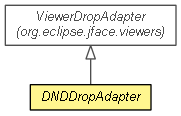

org.eclipse.net4j.util.ui.dnd
Class DNDDropAdapter<TYPE>
java.lang.Object
 org.eclipse.swt.dnd.DropTargetAdapter
org.eclipse.jface.viewers.ViewerDropAdapter
org.eclipse.net4j.util.ui.dnd.DNDDropAdapter<TYPE>
org.eclipse.swt.dnd.DropTargetAdapter
org.eclipse.jface.viewers.ViewerDropAdapter
org.eclipse.net4j.util.ui.dnd.DNDDropAdapter<TYPE>
- All Implemented Interfaces:
- EventListener, DropTargetListener, org.eclipse.swt.internal.SWTEventListener
- public abstract class DNDDropAdapter<TYPE>
- extends ViewerDropAdapter

| Methods inherited from class org.eclipse.jface.viewers.ViewerDropAdapter |
clearState, determineTarget, dragEnter, dragOperationChanged, dragOver, drop, dropAccept, getBounds, getCurrentEvent, getCurrentLocation, getCurrentOperation, getCurrentTarget, getFeedbackEnabled, getSelectedObject, handleException, overrideOperation, setExpandEnabled, setFeedbackEnabled, setScrollEnabled, setScrollExpandEnabled, setSelectionFeedbackEnabled |
| Methods inherited from class java.lang.Object |
clone, equals, finalize, getClass, hashCode, notify, notifyAll, toString, wait, wait, wait |
DNDDropAdapter
protected DNDDropAdapter(Transfer[] transfers,
StructuredViewer viewer)
- Since:
- 3.0
DNDDropAdapter
protected DNDDropAdapter(StructuredViewer viewer)
- Since:
- 3.3
getTransfers
public Transfer[] getTransfers()
- Since:
- 3.0
setTransfers
protected void setTransfers(Transfer[] transfers)
- Since:
- 3.3
getViewer
public StructuredViewer getViewer()
- Overrides:
getViewer in class ViewerDropAdapter
isDropBetweenEnabled
public boolean isDropBetweenEnabled()
setDropBetweenEnabled
public void setDropBetweenEnabled(boolean dropBetweenEnabled)
determineLocation
protected int determineLocation(DropTargetEvent event)
- Overrides:
determineLocation in class ViewerDropAdapter
performDrop
public boolean performDrop(Object data)
- Specified by:
performDrop in class ViewerDropAdapter
validateDrop
public boolean validateDrop(Object target,
int operation,
TransferData type)
- Specified by:
validateDrop in class ViewerDropAdapter
validateTransfer
protected boolean validateTransfer(TransferData type)
- Since:
- 3.3
validateTarget
protected abstract boolean validateTarget(Object target,
int operation)
performDrop
protected abstract boolean performDrop(TYPE data,
Object target)
Copyright (c) 2004 - 2012 Eike Stepper (Berlin, Germany) and others.